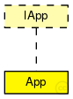

This documentation is released under the Creative Commons license
This documentation is released under the Creative Commons licenseNode's application level
The following diagram shows usage relationships between types. Unresolved types are missing from the diagram.
The following diagram shows inheritance relationships for this type. Unresolved types are missing from the diagram.
| Name | Type | Default value | Description |
|---|---|---|---|
| address | int |
local node address |
|
| destAddresses | int |
destination addresses range |
|
| hasVehicle | bool | ||
| maxWaitingTime | double | 2minute | |
| sendIaTime | double | 1minute |
time between generating packets |
| Name | Value | Description |
|---|---|---|
| display | i=block/browser |
| Name | Direction | Size | Description |
|---|---|---|---|
| in | input | ||
| out | output |
// // Node's application level // simple App like IApp { parameters: int address; // local node address int destAddresses; // destination addresses range bool hasVehicle; volatile double maxWaitingTime @unit(s) = default(2minute); volatile double sendIaTime @unit(s) = default(1minute); // time between generating packets @display("i=block/browser"); gates: input in; output out; }
This documentation is released under the Creative Commons license